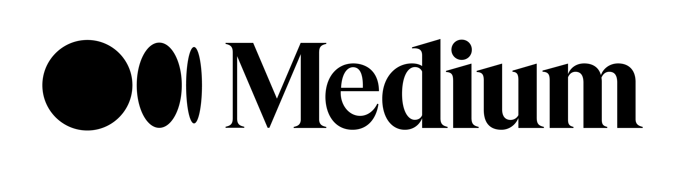
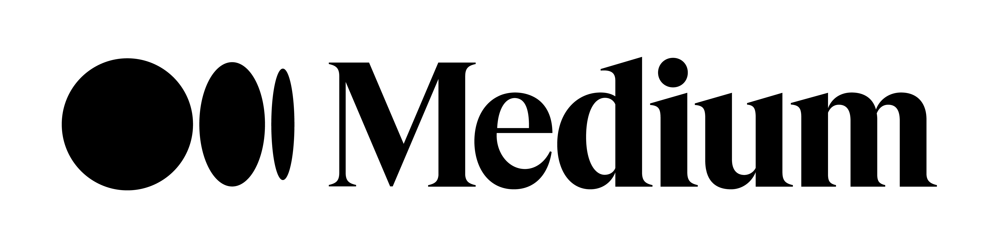
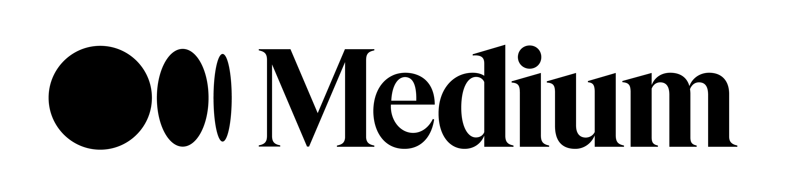

Hello, I'm
Happy Patel
Product Manager | Software Developer
 

Hello, I'm
Product Manager | Software Developer

Get To Know More
Hello! I'm Happy, a passionate developer based in the vibrant city of Toronto. With over 2 years of experience in full-stack development, I thrive on creating innovative software solutions that leave a lasting impact.
Currently, I'm on a journey of continuous learning, pursuing a Bachelor of Computer Science and a Bachelor of Business Administration from the University of Waterloo and Wilfrid Laurier University. This unique blend of technical and business knowledge equips me to tackle complex challenges with confidence.
My expertise spans across various domains, including cloud computing, web development, cybersecurity, and machine learning. Whether it's building scalable web applications or implementing cutting-edge security measures, I'm always eager to dive deep into the latest technologies.
In my previous co-op positions at Magnet Forensics and SinaLite, I honed my skills as a full-stack developer while working on exciting projects that pushed the boundaries of innovation.
Let's connect and explore how we can leverage technology to bring your ideas to life!
Learn More About
Medium
Magnet Forensics
Noomi
Gao Tek
Excel, Microsoft Suite, AWS, Jenkins, Git, Azure DevOps, Terraform, Linux, MySQL, Jira, Tableau, R Studio, C++, Python, Clojure, C#, HTML/CSS, React.js
Competitive Market Research, Conducting Consumer Interviews, Digital Marketing, Seach Engine Marketing (SEM), Brand Management, Agile Software Development, Scrum Master, CI/CD Practices, Team Leadership